Restaurantes - Mariscos El Levantón
Nos gustan los mariscos: ✅.
En la costa los mariscos saben buenos: ✅.
Ensenada está en la costa: ✅.
Y en Mariscos El Levantón sirven unos de los mejores mariscos que hemos probado!
No, bueno, ya, fuera de broma; llevábamos un par de años queriendo ir, pero por una u otra razón no habíamos coincidido con su horario (Miércoles a Domingo de 11 a 17 horas)... pero por fin se nos hizo.. y sí, lamento haberlo hecho, pero si fuimos de "esos" clientes que llegan a las puras 11 y vamos, es Jueves, no es quincena, apenas estaban barriendo el piso antes de acomodar las sillas. Tuvimos que esperar 10 minutos! (léase en tono de Lady Oysters, o algo así) pero naaaahmmmbre la espera definitivamente valió la pena y vamos, tampoco fuimos taaaan gachos como para pedirles un taco de pescado cuando nisiquiera le habían prendido al aceite.. pura cosa de la barra fría.... por hoy.
Empezamos la orden con... ya te puedes imaginar... ostiones 😁... y tostadas de ceviche - pescado y camarón para empezar. Y ok mientras desconchaban los ostiones y servían las tostadas nos fueron llevando las salsas:
La primera es una que obviamente hacen ahí, con lo que parecen jalapeños, cebolla y salsas negras
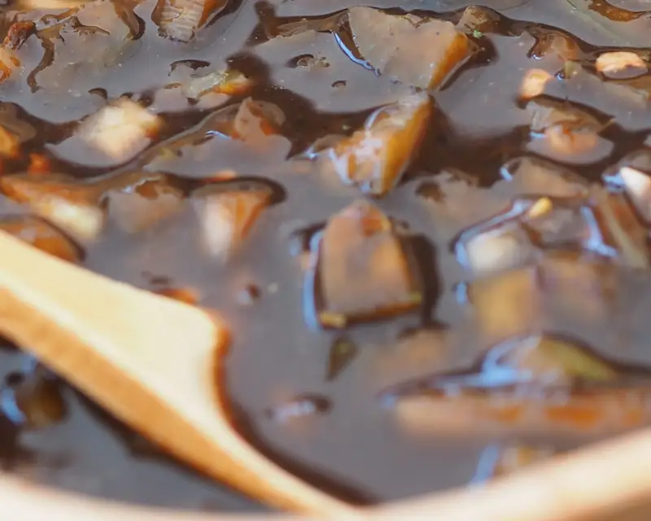 {kind=link}
Luego el surtido rico de salsas, que por lo visto las México Lindo están en todos lados.
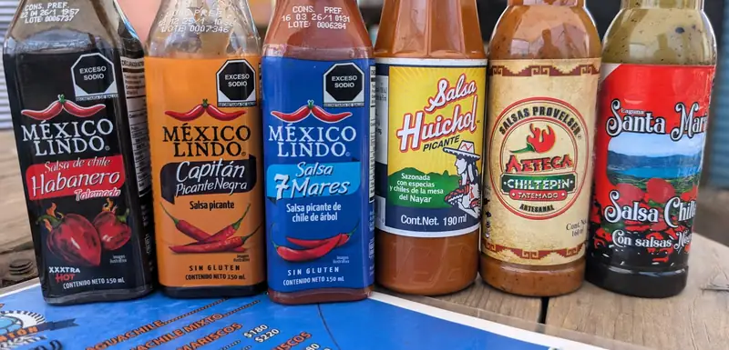 {kind=link}
Pero hasta había una de Ensenada 😁...
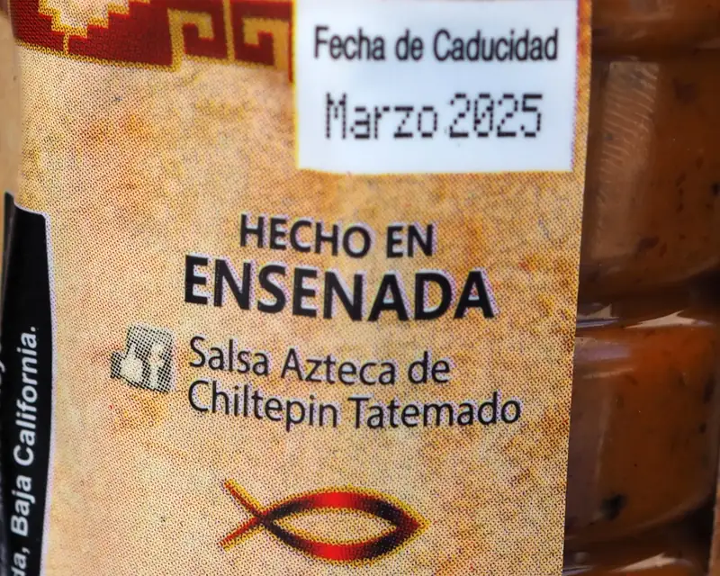 {kind=link}
y bueno pues, que comience la tragadera... el ostión, como lo sirvieron, en su concha
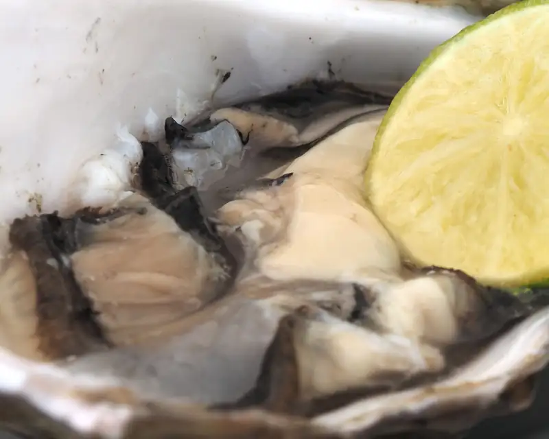 {kind=link}
el ostión, con la salsa de la casa y un poquio de la ensenadense
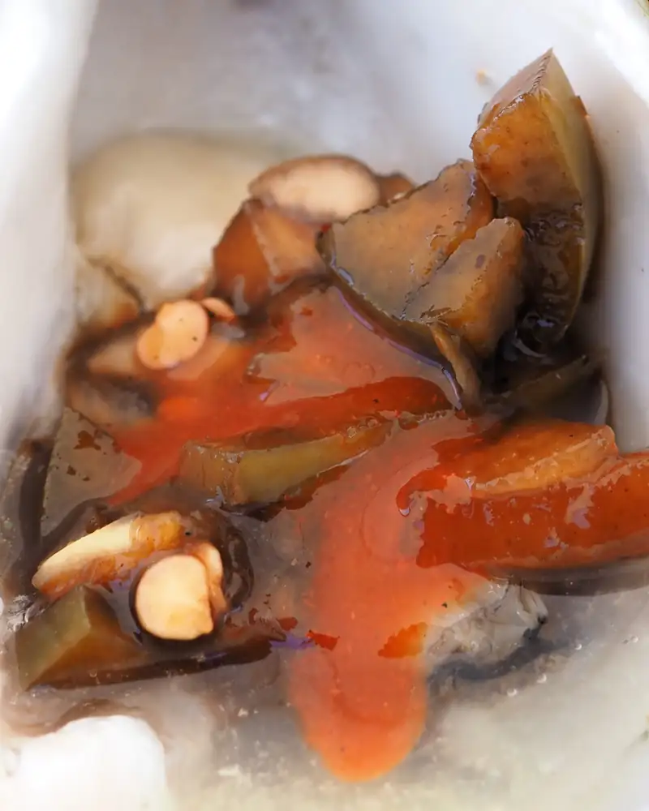 {kind=link}
otro ostión... con otra salsa... todos los ostiones con limón, obviamente
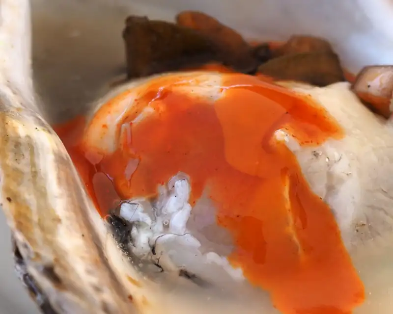 {kind=link}
la tostada de ceviche de pescado, sí, molido; ellos dicen ser mariscos tradicionales ensenadenses, y molido es el tradicional
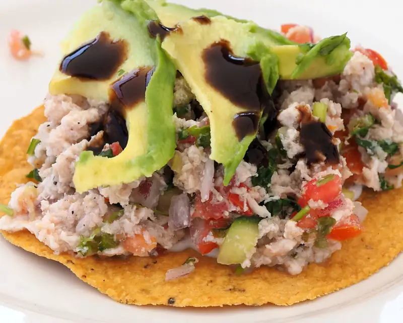 {kind=link}
tostada de ceviche de camarón, notarás que 1) se VE que es camarón y 2) que el camarón está curtido en limón, pero NO COCIDO! así es como debe ser, y como debe ser, buenísima.
{kind=link}
y aquí algo que no se consigue en otros lugares, menos en el este del país (y por extensión, Texas): paté de marlin ahumado. No se si porque estaba frío de donde lo traían, pero se sintió muy refrescante, con zanahoria y otras verduras y ligera la mano que le puso la mayonesa.
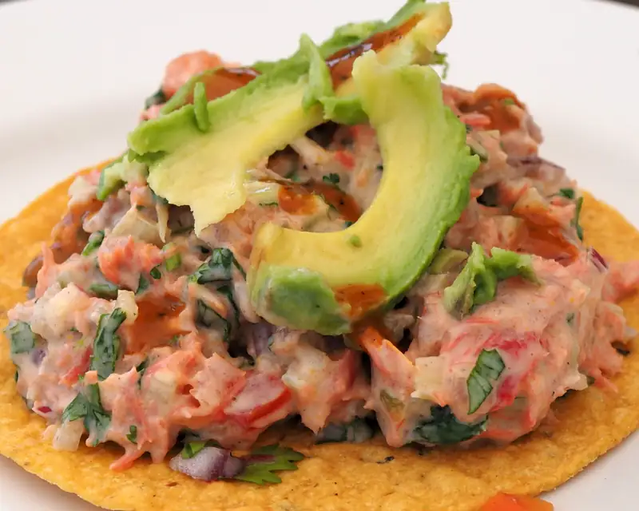 {kind=link}
y ahora un aguachile (mixto).. debo admitir que no estoy 100% seguro que los aguachiles hayan existido en Ensenada hace 30 años, pero también puede ser que como en la casa casi no comíamos picante, un aguachile nom'as no iba a llegar a nuestra mesa. Pero en fin, aguachile, te preguntan que tan picante y lo pedimos medio porque como dicen, siempre le puedes agregar, pero no se lo puedes quitar. Como es mixto, viene con camarón, pulpo y caracol.
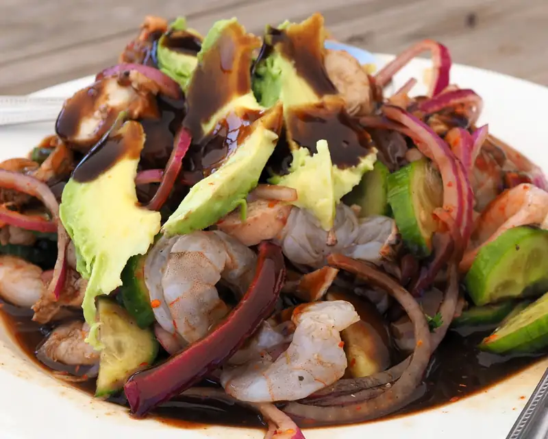 {kind=link}
El bocado perfecto no exist... oh sí... sí se puede ... con camarón
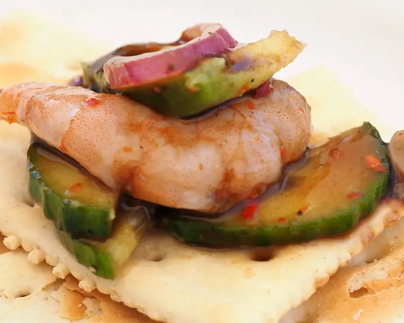 {kind=link}
Pulpo
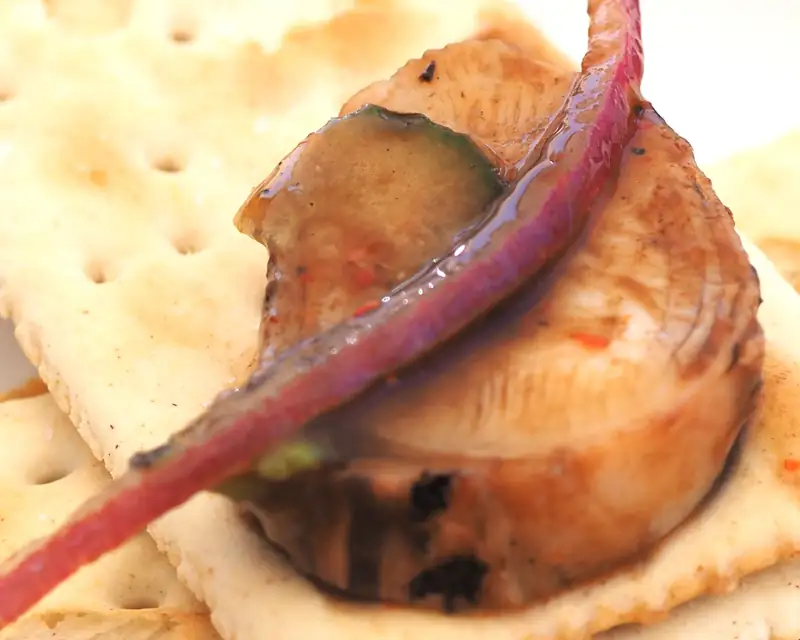 {kind=link}
Caracol
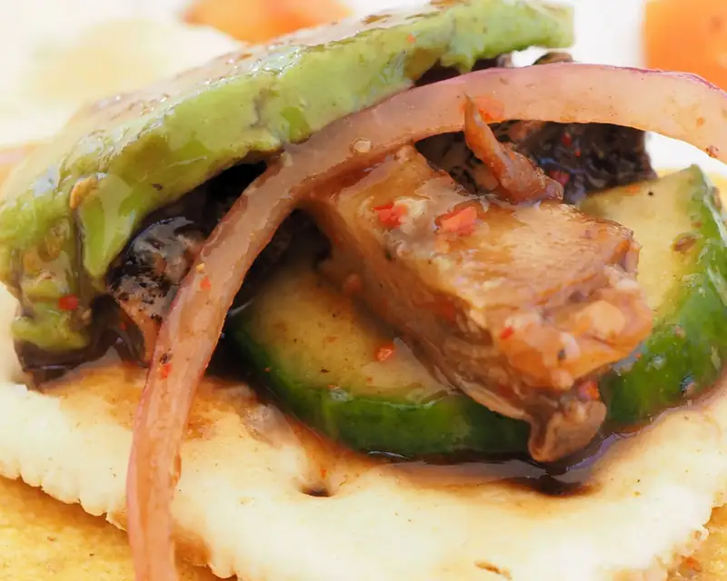 {kind=link}
'ora los 3 juntos, pero en tostada
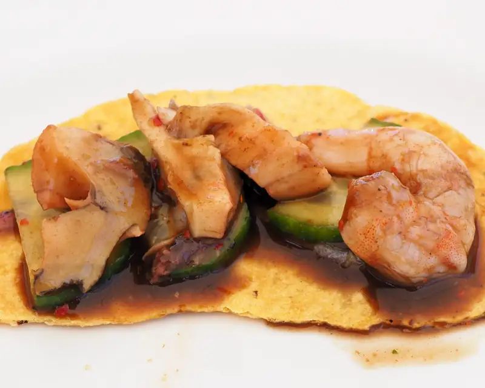 {kind=link}
Y así nom'as para terminar de llenar la muela, una almeja pismo preparada -- groseamente buena.
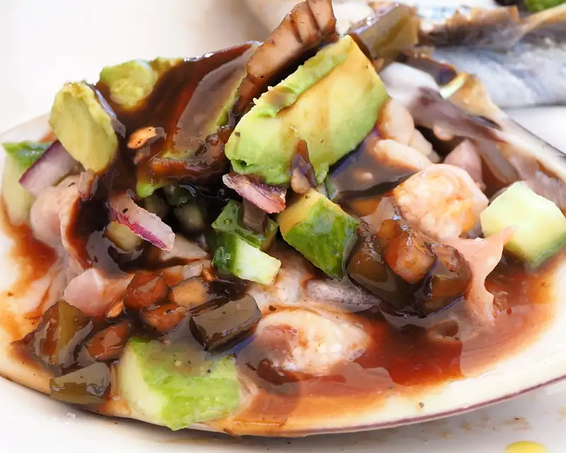 {kind=link}
el baño, para que sepas, es unisex 😜
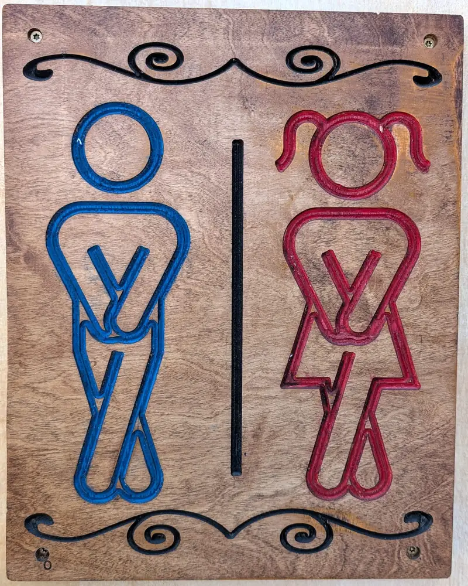 {kind=link}
Ordena y pide... especialmente si estás por la zona de Valle Dorado, o sabes qué? vas a ir al cohhhhco? de regreso llega por un tentempié porque no te quisieron dar esa 3ra muestra los muy codos
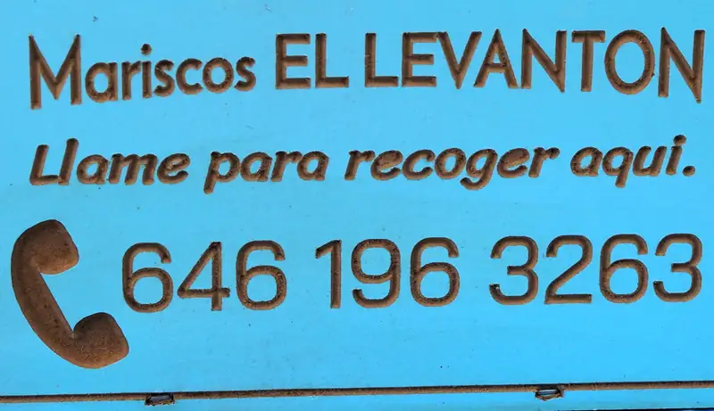 {kind=link}
Y el menú, p'a que sepas lo que hay y lo que probablemente te puedan customizar, porque sí, coooomo hay gente que le gusta pedir cosas con instrucciones muy específicas... maldito starbucks que mal-acostumbró a la gente 💪 😜
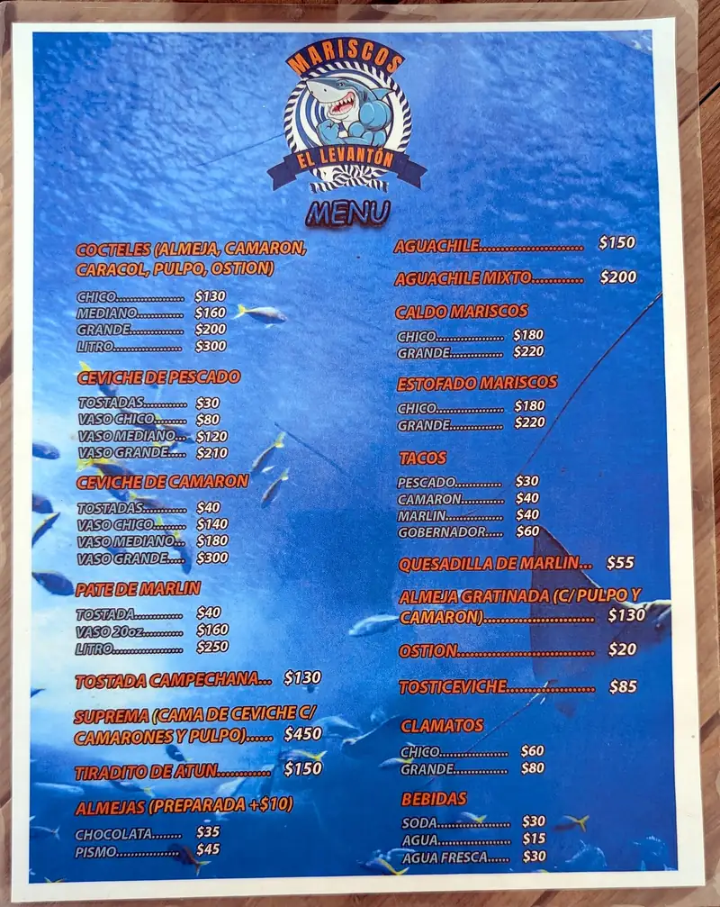 {kind=link}